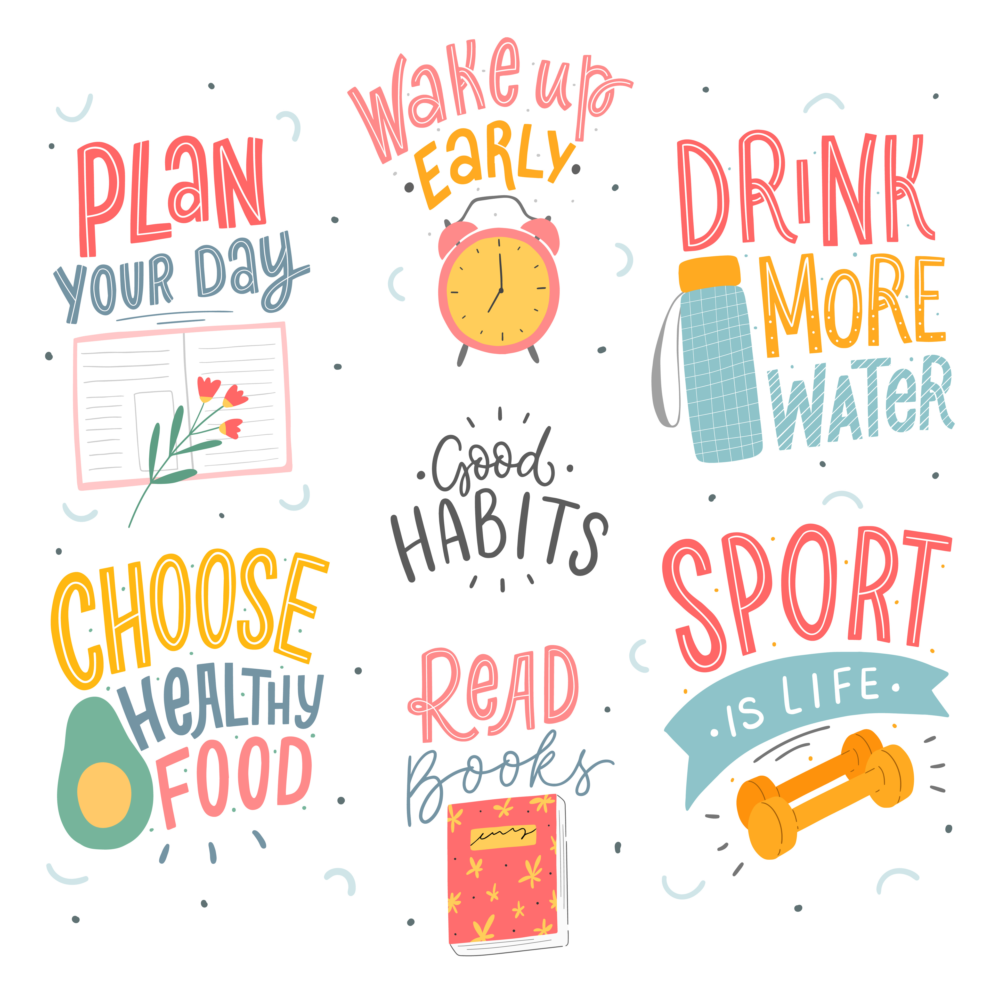

Welcome to Fit Focus!
Our Community
Welcome to the FitFocus community, where health and wellness enthusiasts unite to inspire, support, and empower one another on their fitness journeys. We believe in the power of community to transform lives, and we're dedicated to creating a positive and inclusive space for individuals of all fitness levels. Our community has been built on encouragement, accountability, and progress. Whether you're just starting your fitness journey or a seasoned athlete, you'll find a supportive network of like-minded individuals here to cheer you on every step.
At FitFocus, we go beyond physical fitness to nurture mental well-being. We understand the vital link between physical and mental health and believe that true wellness requires attention to both. Our community actively promotes mental health awareness, stress management techniques, and self-care practices through discussions, resources, and personal experiences. Whether you're looking for mindfulness exercises, stress relief tips, or a supportive community during challenging times, FitFocus is here for you.

In the FitFocus community, your journey is our journey, and our shared goals strengthen us. Join us and become a part of a collective striving for more than just personal fitness. Together, we'll work towards greater strength, vitality, and well-being, inspiring each other to lead our healthiest, happiest lives. Together, we'll overcome obstacles, celebrate victories, and support one another through every twist and turn. Welcome to FitFocus—where mind, body, and community unite to thrive.
Our Proud Partners
At FitFocus, we are proud to partner with industry leaders who share our commitment to holistic wellness. Through collaborations with renowned brands like HelloFresh, Bodybuilding.com, Talkspace, and Calm.com, we offer our community access to resources designed to support their physical and mental well-being. With HelloFresh's nutritious meal delivery service, members can fuel their bodies with delicious, chef-curated recipes that align with their fitness goals. Bodybuilding.com provides expert guidance, supplements, and workout plans to help individuals achieve their fitness aspirations and maximize their potential. Talkspace offers convenient online therapy sessions, making mental health support accessible and convenient for our members. And with Calm.com's meditation and relaxation resources, our community can find peace and mindfulness amidst life's challenges. Together, we empower individuals to thrive in mind, body, and spirit.
About Fit Focus
Where Do I Start?
Building a healthy habit requires consistency, patience, and self-awareness. Start by setting a clear and achievable goal, whether exercising regularly, eating more vegetables, or meditating daily. Break the habit into smaller, manageable tasks and create a specific action plan. Reminders or cues can prompt you to engage in the habit at the desired time or place. Celebrate small victories along the way to stay motivated and reinforce the habit. It's essential to be kind to yourself and acknowledge that slip-ups are natural. Instead of dwelling on setbacks, focus on learning from them and recommitting to your goal. Surround yourself with supportive individuals or communities who can encourage and hold you accountable. Over time, as the habit becomes ingrained in your routine, it will feel more natural and effortless, leading to lasting positive change.
Mental Health
Healthy Habits
Healthy habits are crucial for a fulfilling life. By incorporating routines for physical activity, nutritious eating, sleep, and stress management, we establish the foundation for well-being. These habits improve our physical and mental health and empower us to thrive amidst life's challenges. They inspire others to prioritize their well-being and create a culture of vitality and positivity. In essence, healthy habits are drivers for a life lived to its fullest potential.
